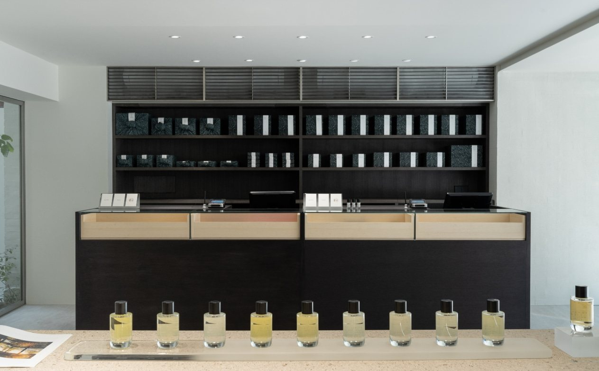
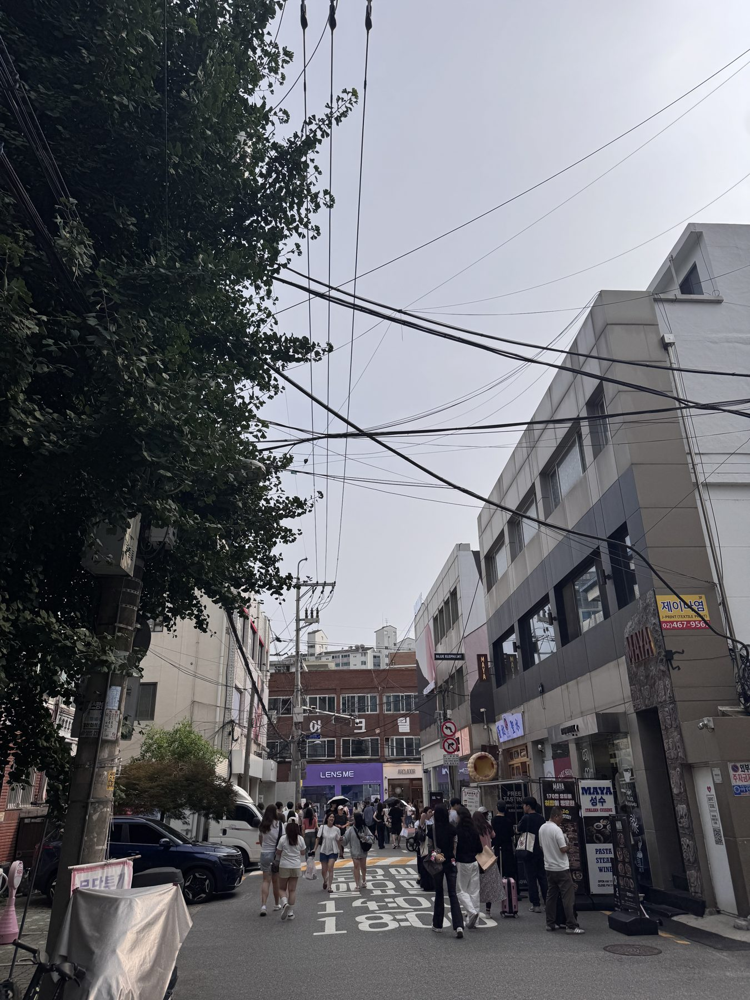
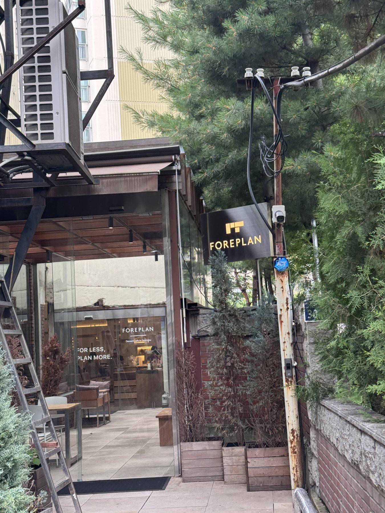
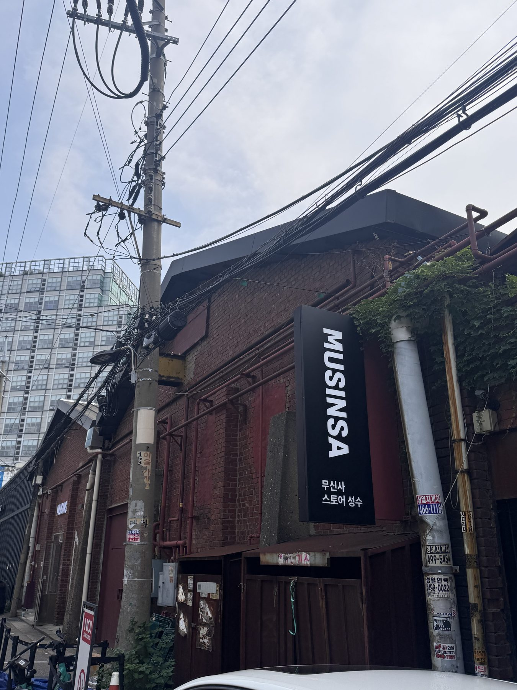
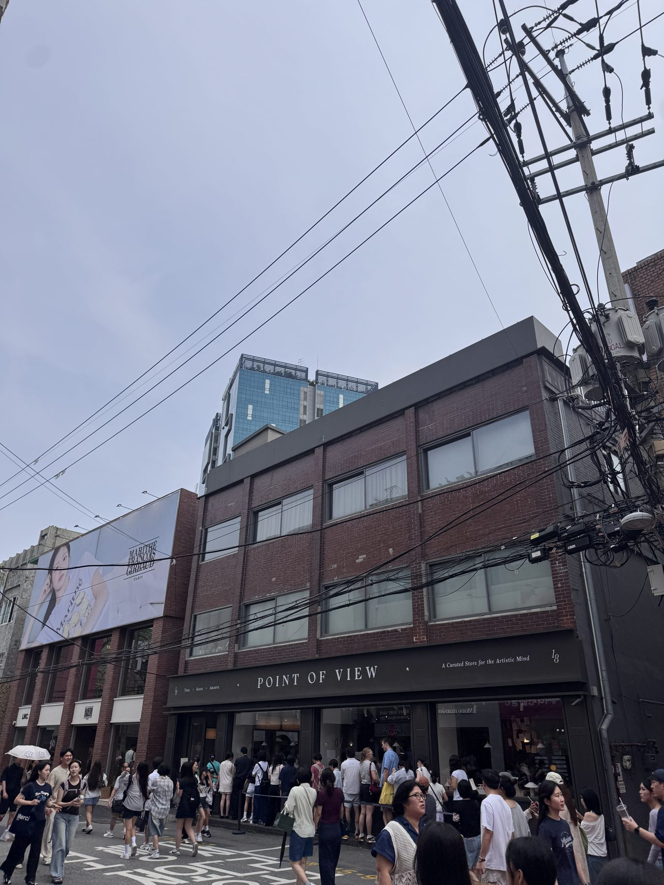
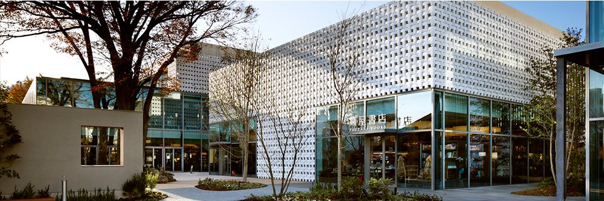
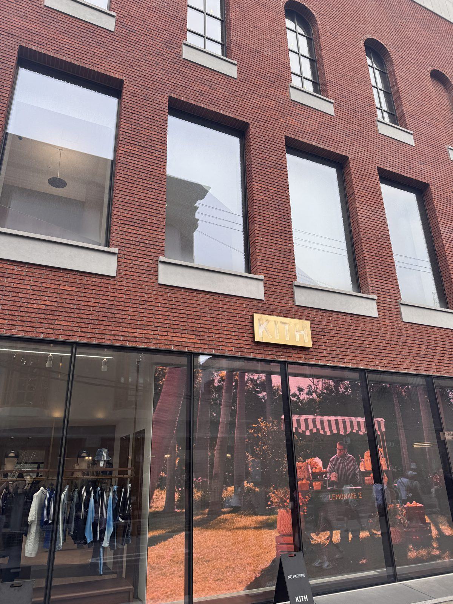
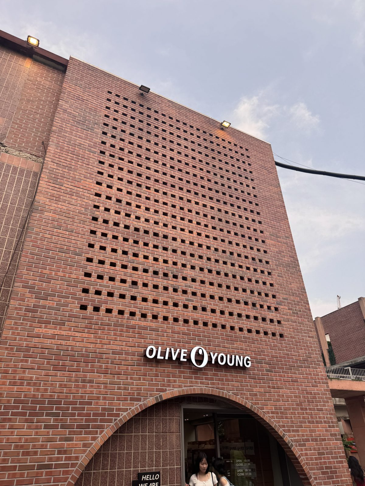
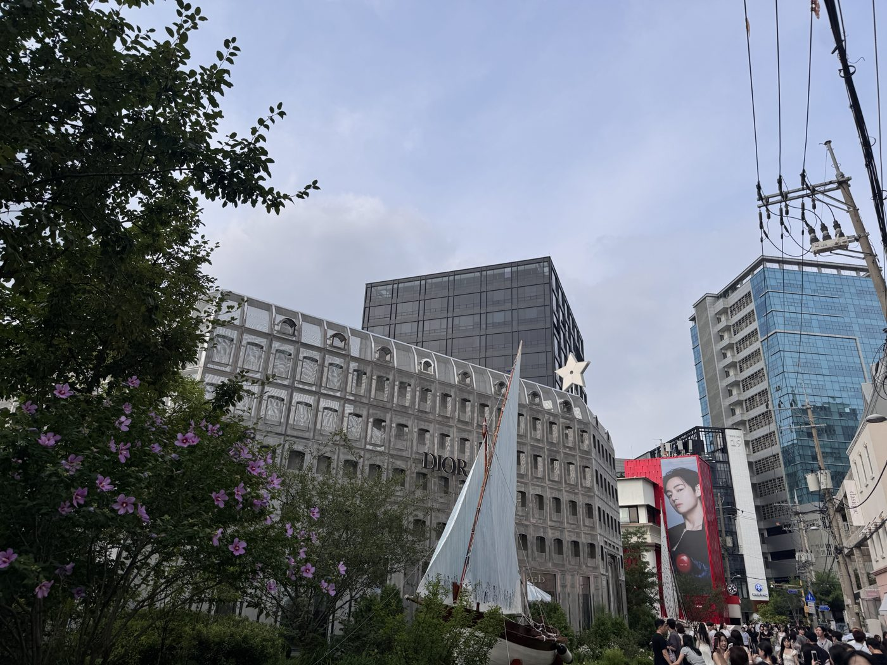
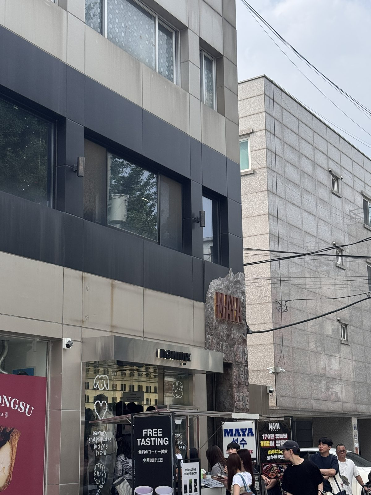

성수 역설계
완성된 거리에서, 그걸 만든 사람들의 결정을 거꾸로 읽다.
이 문서는 성수를 소개하지 않습니다.
완성된 공간에서 그걸 만든 사람의 결정을 거꾸로 읽어내는 눈 하나를 — 성수라는 실제 사례에 대고 증명합니다. 그러니 여기 적힌 관찰은 성수에 대한 정보가 아니라, 그 눈이 실제로 작동한다는 증거입니다. 같은 눈은 처음 보는 어떤 회사에도 그대로 댈 수 있고 — 마지막 절이 그걸 보입니다.
이 문서가 뭔지 —
30초면 됩니다
저는 성수를 한 바퀴 걷고, 거기서 «회사를 읽는 눈» 하나를 만들었습니다. 이 문서는 그 눈이 처음부터 끝까지 어떻게 작동하는지를 보여줍니다.
그러니 성수를 몰라도 괜찮습니다. 여기서 보실 건 «성수 정보»가 아니라 — 완성된 것에서 «누가, 무엇을 얻으려고, 무엇을 버렸나»를 거꾸로 읽어내는 방법입니다. 그리고 그 방법은, 여러분이 지원할 «회사»에 그대로 댈 수 있습니다.
먼저 방법을 꺼내 둡니다 —
뒤에 나오는 건 전부 이 눈의 «적용»입니다
완성된 것은 결과입니다. 매장도, 거리도, 회사도, 우리에겐 다 지어진 채로 도착합니다. 그 안에서 어떤 결정이 있었는지는 보이지 않습니다. 역설계는 그 결과에서 결정을 거꾸로 짚는 일입니다.
거창한 게 아닙니다. 떡볶이를 먹고 “아, 여기 물엿을 넣었네”라고 되짚는 것과 같은 동작을, 공간과 회사에 대고 하는 것뿐입니다. 이 문서는 그 짚기를 두 개의 도구로 굴렸습니다.
※ 이 넷은 “무엇을 만들든” 누군가 반드시 정해야 하는 자리입니다. 그래서 매장에도, 카페에도, 회사에도 똑같이 물을 수 있습니다.
팬이 못 사고 나온 5분이
이 조사를 열었습니다
2026년 7월 4일 토요일 오후, 27℃에 습기까지 낀 날이었습니다. 저는 논픽션을 몇 년째 쓰는 사람입니다 — 핸드워시도 바디워시도 늘 이 브랜드입니다. 그날 성수 연무장길을 걷는데 — 매장 밖까지 진하게 퍼진 향이 먼저 저를 붙잡았습니다. 마침 쓰던 것 말고 다른 라인도 볼 겸 들어갔습니다.

그런데 향을 파는 곳에서, 향을 하나도 못 맡고 나왔습니다. 밖에서 저를 완벽하게 유혹한 그 향이 — 안에서는 너무 세서 아무것도 판별할 수 없게 만들었습니다. 순서는 이랬습니다.
여기서 화를 내고 끝냈다면 그냥 후기였을 겁니다. 저는 대신 폰을 열어 메모를 남겼습니다. 늘 쓰는 형식 그대로 — 날짜 / 장소 / 내용 순으로 적습니다. 날짜와 장소를 먼저 박아 두면 나중에 다시 찾기가 쉽고, 무엇보다 한참 뒤에 펼쳤을 때 그날의 풍경이 함께 떠오릅니다 — “성수 연무장길”이라는 다섯 글자가 그 27℃의 공기까지 불러옵니다. 내용은 감정을 나타내는 낱말은 한 개도 쓰지 않고, 본 것과 몸이 한 일만. 그리고 한 줄의 질문을 남겼습니다.
“팬이 향을 못 맡게 만들어놓고 — 왜 이렇게 만들었을까?”
이 질문이 조사의 시작점입니다. 향이 센 건 실수일 수도, 설계일 수도 있습니다. 한 매장만 보면 알 수 없습니다. 그래서 매장 밖으로 나가, 이 거리 전체가 같은 문법으로 도는지를 확인하기로 했습니다. 아래부터는 그 확인의 기록입니다 — 그리고 매 장면 끝에서, 같은 눈이 회사에서는 어디에 닿는지를 함께 답니다.
본 것에서 뻗지 않은 추측은 하나도 없습니다
그 5분의 질문을 네 줄로 따라가 봤습니다. 왼쪽은 실제로 본 것, 오른쪽은 거기서만 뻗은 추측입니다. 둘을 갈라 두는 이유는 하나 — 누가 반박해 오면 어느 줄이 틀렸는지 정확히 짚을 수 있어야 하기 때문입니다.
넷을 합치면 하나가 남습니다. 이 매장은 머무르게 하는 쪽이 아니라 «끌어당겨 빨리 내보내는» 쪽을 골랐습니다. 그렇게 보면 향이 센 것도 실수가 아닙니다 — 지나가는 사람의 코를 순간에 붙잡는 장치일 수 있습니다. 팬인 제 코가 마비된 건, 그 설계가 «오래 쓰는 사람»이 아니라 «처음 지나가는 사람»에 맞춰졌기 때문입니다.
한 매장만 보고 «구조»라 부르면 —
그건 우연입니다
지금까지는 논픽션 한 곳의 이야기입니다. 이 매장만의 선택일 수도 있습니다. 그래서 매장을 나와, 성수를 가장자리에서 본선까지 걸으며 열네 구간을 찍었습니다. 확인하려던 건 하나 — 이 문법이 거리 전체에 반복되는가.

거의 모든 매장이 줄을 세우고 있었습니다. 방식만 달랐습니다 — 현장 줄, 웨이팅 앱, 사전 예약. 그리고 방문객 구성이 눈에 띄었습니다. 한국인 8 : 외국인 2, 그 한국인의 대부분이 10~20대. 명동의 정확한 반전이었습니다. 명동이 외국인·전 연령의 관광지라면, 성수는 내국인·젊은 층이 «일부러 찾아오는» 목적지였습니다.
가장자리엔 줄이 없었습니다 —
대신 세계관이 있었습니다
본선이 전부 줄을 세울 때, 가장자리의 포어플랜은 정반대였습니다. 건축 설계의 문법으로 만든 디저트 공간인데 — 줄이 아니라 «세계관»으로 사람을 붙잡고 있었습니다. 본 것 셋.

여기서 파는 건 커피가 아니라 «집착»이었습니다. 큰길 가게는 지나가는 사람이 먹여 살리고 — 가장자리 가게는 세계관이 먹여 살립니다. 목적지가 되지 못하면 가장자리는 죽으니까요. 결정적인 건, 건축을 «테마»로 빌린 게 아니라 그 문법을 메뉴·기물·서빙까지 끝까지 밀어붙였다는 점입니다 — 세계관이 새는 자리가 한 군데도 없었습니다.
걷다 보니 이상하게 익숙했습니다 —
지붕을 벗긴 백화점이었습니다
열네 구간을 다 걷고 나니 기시감이 왔습니다. 성수는 힙한 신생 동네처럼 보이지만, 구조는 낯익었습니다 — 백화점을 눕혀서 길바닥에 펼쳐 놓은 것이었습니다. 지붕을 벗기면, 백화점의 장치가 그대로 눕습니다. 단 한 칸만 빼고.

넷은 형태만 바꿔 그대로 눕는데, «쉼» 한 칸만 비어 있었습니다. 이 한 칸이 뒤 절의 전부입니다.
차이는 하나 — 운영자가 없습니다
왜 «쉼» 한 칸만 끊겼을까요. 답은 소유 구조에 있었습니다.
성수는 휴식을 수출하고, 피로를 수입합니다.
지친 사람이 밖으로 걸어 나가며 상권은 넓어지고, 그 비용은 방문자의 몸이 냅니다. 제가 27℃ 고습에서 쌓은 피로는, 그날의 컨디션이 아니라 구조가 만들어낸 산출물이었습니다 — 제 몸이 이 동네의 «휴식 외부화»를 대신 지불한 셈입니다.
희소한 입장이 —
이 동네의 화폐입니다
하루 동안 «입장을 거르는» 네 단계를 전부 목격했습니다. 위로 올라갈수록 우연히 지나가던 방문자가 배제됩니다.

공통점은 하나였습니다. 차별점이 없어서 대기를 시키는 게 아니라, 대기 그 자체를 팔고 있었습니다. 게이트가 곧 상품이었습니다.
800평인데, 상품은 얼굴만 합니다
지친 상태로 우연히 들어간 곳이 젠틀몬스터 성수였습니다. 800평 매장에 상품은 선글라스 하나 — 손바닥만 합니다. 남는 공간은 미술 설치와 DJ 부스가 채우고 있었습니다.

처음엔 그 스펙터클이 «과한 연출»로 보였습니다. 그런데 되짚으니 반대였습니다 — 연출이 아니라, 상품이 작아서 생긴 «필연»이었습니다. 800평을 선글라스로 채울 수는 없으니까요.
무대 9 : 상품 1.
아이웨어는 극장식 리테일에 구조적으로 가장 잘 맞는 상품입니다. 부피가 작아 공간이 남고, 단가는 높아 그 공간을 미술로 채울 여유가 됩니다. 젠틀몬스터가 «예술을 한다»기보다, 선글라스라는 상품이 그 형식을 요구한 것에 가깝습니다.
그럼 사람들은 왜 여기 오는가
게이트, 무대, 계산대 — 전부 «입장을 거르고, 기다리게 하고, 선택을 대신 정해주는» 쪽으로 정렬돼 있었습니다. 그런데도 사람이 몰립니다. 발견 다섯을 하나로 누르면 명제가 남습니다.
사람들은 여기에 — 객체가 되러 옵니다.
매일 스스로 선택하고 책임지느라 지친 세대에게, 줄 세워지는 것이 오히려 «휴식»이자 «사치»가 됐습니다. 주말에 돈을 내고 와서, 기꺼이 선택권을 반납합니다. 이게 성수가 파는 진짜 상품이었습니다.
이 명제는 걷기 전에 세운 게 아닙니다. 걷고 나서, 관찰이 가리키는 곳에 이미 있던 이론을 찾아 붙였습니다.
먼저 간 동네를 봅니다 —
도쿄 다이칸야마
지금까지는 성수의 «한 장면»이었습니다. 스냅샷은 «지금»까지만 말합니다 — 어디로 가는지는 못 말합니다. 방향을 읽으려면 같은 길을 한 세대 먼저 간 동네를 봐야 합니다. 성수의 «다 자란» 모습을 가늠하기 좋은 선례가 도쿄 다이칸야마입니다 — 같은 «저층·디자인 주도» 창의지구가 먼저 지나온 길입니다.

① 공간은 이렇게 늙었습니다
② ★그래서 «직무»에 무슨 일이 벌어졌나
여기가 이 문서가 진짜 보려던 지점입니다. 공간이 «체험»으로 옮겨가면, 일하는 자리도 같이 옮겨갑니다.
츠타야 서점(蔦屋書店)부터 봅니다 — 일본의 라이프스타일 서점 체인으로, 책을 «분류»가 아니라 «취향·주제»로 묶어 파는 곳입니다(요리 책 옆에 조리도구·식기가 같이 놓이는 식). 다이칸야마 T-SITE가 그 대표 매장이고요. 그 핵심이 «콘시어지»입니다 — 여행·요리·예술처럼 분야마다 전문가를 두고, 책을 꽂는 게 아니라 «그 취향의 삶»을 큐레이션합니다. 점원이 아니라 «분야 편집자»에 가깝습니다.
츠타야는 다이칸야마의 얘기입니다. 그런데 이 «노동 이동»은 다이칸야마 한 동네에 갇힌 게 아닙니다 — 같은 이동이 여러 곳에서, 그리고 이미 성수에서도 보입니다.
정리하면 — 리테일 노동이 «상품을 파는 일»에서 «경험을 설계하고 안내하는 일»로 옮겨가는 «흐름»이고, 다이칸야마는 그게 «다 자란» 곳, 성수는 «막 시작한» 곳입니다. 그래서 다이칸야마가 성수의 «다음»을 보여줍니다.




성수에 «이미» 들어온 브랜드 경험 매장들 — 파는 자리보다 «연출·큐레이션»하는 자리를 부른다. 사진: 김성진 · 2026.07.04
※ 근거: 힐사이드 테라스(마키 후미히코, 1969~) · 다이칸야마 T-SITE(2011) · 츠타야 «콘시어지» 큐레이션 모델. 궤적의 «끝»과 «성수의 다음»은 추론이며, 강사의 다이칸야마 현장 인상으로 보강 예정.
여기까지가 본 것이고,
여기부터는 추측입니다
이 조사가 다루지 못한 것을 먼저 적습니다. 숨기면 질문 하나에 무너지지만, 적어 두면 그 질문이 오히려 다음 조사가 됩니다.
대부분의 포트폴리오는 잘된 것만 씁니다. 저는 안 본 것을 적어 두는 편이 낫다고 생각합니다 — 질문 하나에 무너지지 않으려면.
새로 쓴 게 아닙니다 —
쓴 자리를 그대로 적습니다
지금까지의 관찰은 즉흥이 아니라, §0에서 꺼내 둔 도구 셋과 축 넷을 실제로 굴린 결과입니다. 어디서 무엇을 썼는지 그대로 옮깁니다.
발견 다섯 · 명제 하나 · 안 본 것 여섯. 그중 약 75%는 가지 않았으면 못 얻었을 것입니다 — 이 문서의 값은 «걸어서 직접 봤다»는 데 있습니다.
이 눈은 두 곳에 댑니다 —
겨눌 회사, 그리고 내 방향
이 문서가 증명하려던 건 성수가 아니라 «눈»이었습니다. 그 눈이 작동하는지 보였으니, 이제 대상만 바꿉니다. 그런데 대볼 곳이 하나가 아닙니다 — 회사를 «겨누는» 데(취업)와, 내가 어디로 향할지 «방향»을 잡는 데(진로) 둘 다입니다.
① 겨누기 — 지원할 회사에
성수에 던진 질문은, 문장 하나 바꾸지 않고 회사에 그대로 들어갑니다.
매장의 평수가 그 매장의 우선순위를 말하듯 — 채용공고가 그 회사의 우선순위를 말합니다. 한 회사를 이렇게 읽으면 그 회사에 맞춘 지원서가 나옵니다. 그게 «조준»입니다.
② 방향 잡기 — 나 자신에게
그런데 조준보다 앞에 쓸 데가 있습니다. 성수에서 저는 정반대의 두 설계를 봤습니다 — 희소함을 얻고 접근성을 버린 곳(포어플랜)과, 그 반대로 문을 활짝 연 본선. 어느 쪽에 내가 끌리는지가, 곧 «내가 어떤 맞바꿈 속에서 일하고 싶은가»입니다.
다만 방향은 여기서 «혼자» 나오지 않습니다. §10에서 이 눈으로 «시장이 어디로 가는지»(자리가 어디로 옮겨가는지)를 읽었죠 — 거기에 방금 «내가 어느 쪽에 끌리는가»를 겹치면, 그 겹치는 지점이 방향, 곧 진로입니다. 두 화살표가 만나는 자리입니다.
방향이 잡힌 «다음»에야 겨눌 과녁(회사 하나)이 정해집니다 — 진로가 먼저, 취업이 그다음입니다. 회사 읽기 자체가 방향을 주는 게 아닙니다. 내 끌림(거울)과 시장의 궤적(§10)이 만나 방향이 서고, 회사 읽기는 그 방향을 «겨누는» 도구입니다.
같은 순서로, 먼저 내가 어디로 향할지(진로)를 — 그다음 지원할 회사(취업)를 읽어냅니다.